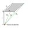
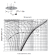
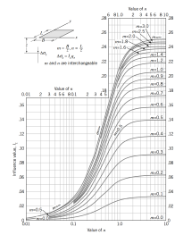

We learned how to calculate the maximum and critical hydraulic gradient to asses internal erosion and piping.
Contents
Increment of stress due to an infinitely loaded area.
Increment of stress due to a point load (Boussinesq equation).
Use of charts and analytical solutions.
Use of numerical approximation.
Objectives covered in this lecture
[O3]: Develop an understanding of how to evaluate the stiffness/compressibility of soils and the role of seepage and permeability on time-dependent consolidation/settlement.
After this lecture we will able to:
Calculate the increment of stress produced by infinitely loaded soils.
Calculate the increment of stress for arbitrarily shaped areas.
Induced stresses
Is the increment of stress produced by an external load.
These stresses are absorbed either by the water as excess water pressure or by the soil skeleton as effective stresses.
With enough time, the soil skeleton will carry the generated stress.
Infinitely loaded area
If the width of the loaded area is considerably larger than the thickness of the compressible layer, it can be assumed as infinitely loaded area.
The increment of stress for the idealized model is independent of position and depth.
\( \Delta \sigma (x,z)= q \)
Example 6.1
A landfill is designed to contain waste (\(\gamma_t=112\) pcf) up to a height of 30 ft over a thick clay (\(\gamma_{sat}=131\) pcf) as shown in the figure. The water table is at the top of the clay. The landfill is wide in comparison to the thickness of the soil layer. Calculate the increment of stress, and the final (long-term) total and effective vertical stresses at a depth of 5 ft.
The principle of superposition implies that the induced stress of multiple loads is the addition of all individual induced stresses.
$$\Delta \sigma_z= \int_{A} I(x,y) q(x,y) dA$$
We can use a numerical approximation instead:
\( \Delta \sigma_z=\sum_{i=1}^n q_i A_i I_i\)
Example 6.2
A square footing of 2.5 m of width is placed at the surface of the soil as shown in the figure. Structural analysis indicates that the footing will carry a load of 100 kN. Calculate the increment of stress at a depth of 2 m at the centerline and the mid edge of the footing. Use a discretization of two elements in each direction. How does the solution compare with the point load solution?
Data
\(z=2\unit{m}\), \(Q=100\unit{kN}\), \(B=2.5\unit{m}\)
Principles
\(\Delta\sigma_z=\displaystyle\sum_{i=1}^{n} q_i\,A_i\,I_i\),
\(I=\dfrac{3}{2\pi z^2\left[1+(r/z)^2\right]^{ \ 5/2}}\)
Here \(I\) has units of \(1/\mathrm{m^2}\), so \(Q\,I\) has units of stress
Point load at A
\(r=\) \(\unit{m}\), \(z=2\unit{m}\)
\(I_A=\)
\(=\) \(\unit{/m^2}\)
\(L=\) Length of the loaded area.
\(B=\) Width of the loaded area.
\(R_1= \sqrt{L^2+ z^2}\)
\(R_2= \sqrt{B^2 + z^2}\)
\(R_3= \sqrt{B^2+L^2+z^2}\)



Example 6.3
Solve Example 6.2 using the analytical and chart solutions for a rectangular loaded area. Compare with the approximation.
Data
\(B=L=2.5\unit{m}\), \(z=2\unit{m}\), \(q=16\unit{kPa}\)
Principles
\(I'=\dfrac{1}{2\pi}\left[\tan^{-1}\!\left(\dfrac{LB}{zR_3}\right)+\dfrac{LBz}{R_3}\left(\dfrac{1}{R_1^2}+\dfrac{1}{R_2^2}\right)\right]\)
This is the stress under a corner. Split the footing so the point is a corner of every piece.
First for point A
\(L'=\) \(\unit{m}\), \(B'=\) \(\unit{m}\)
Questions asked by classmates about this chapter, with the instructor's answers.
Questions are shown anonymously. Use Ask a question in the toolbar to submit yours.
Loading questions…
Ask a question about this chapter
Your student ID is used only to check that you are registered in the class.
Your question will be shown anonymously once it is answered — your name and ID
are never displayed.